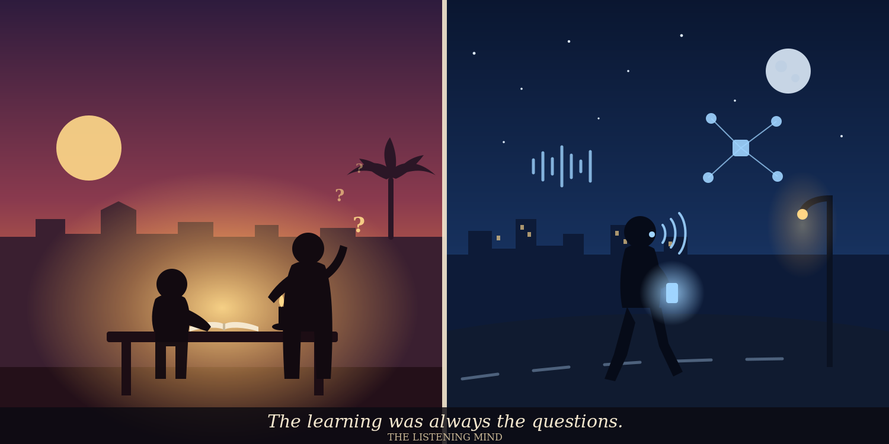

The artifacts behind the essay - how fifty pages of study documents became a 28-minute podcast.
Two AI hosts - one curious, one expert - discuss Power BI data modelling: star schemas, DAX, filter context, performance. 28 minutes.